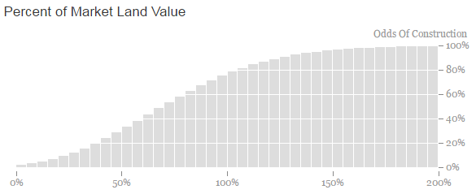

We believe that providing a transparent, open resource for policymakers can improve local decision making. The Policy Gauge tool is designed to help local politicians, city staff, and the general public understand how local policies may impact total potential housing production and city revenues in their cities. Our calculator focuses on 4 example cities — San Francisco, Oakland, Pleasanton, and Menlo Park — using the most important factors supported by the literature and local development experts.
The tool provides an estimated range of potential housing and revenue produced under scenarios that allow changes to many default assumptions. The methodology and default assumptions were vetted through conversations with area development experts, data collection, and analysis from January to May of 2016. In reality, many of these factors move together, so users should be careful to interpret results significantly different from existing market conditions. The tool is currently in βeta testing.
Key assumptions for this model are drawn from numerous discussions with developers, contractors, and architects, as well as recent real estate feasibility studies done in San Francisco, Oakland, and El Cerrito by AECOM (here and here), Seifel Consulting (here and here), and Strategic Economics (here). Some basic assumptions for affordable condo purchase price calculations are drawn from the San Francisco Mayor's Office of Housing Inclusionary Housing Program (here). Structure and basic assumptions are also drawn from various real estate classes at UC Berkeley — taught by Bill Falik, Dennis Williams, and Carol Galante.
Parcel level data on developable parcels comes from local open data portals, planning department staff, county assessor data, Padmapper rental listings, and the California Department of Conservation. In San Francisco, data for Treasure Island and Yerba Buena Island were excluded because data was unavailable for this analysis.
The model calculates developer return using the Internal Rate of Return (IRR) metric. Model assumptions and calculations are based on a pro-forma analysis. For more detailed methodological information, contact @grahamimac.
The basic assumptions are as follows:
The project is assumed to be an apartment project, and is sold at stabilization after all construction is complete at a rate of 20 units per month.
The bank loan is 65% of total hard and soft construction costs and bank loan fees are 75 basis points. Costs to build out the retail space are $15 per square foot (psf) less expensive than low-rise construction costs. Tenant improvements and leasing costs for the space are $100 psf. Basic podium parking costs $120 psf.
Sales expenses are 3.5% of revenue for rental properties and 5.5% of revenue for condos. There is a premium for condo finishes of 5% of residential hard costs. All units are 1000 square feet (sf) and receive the same rent per square foot. There is a 10% contingency added to hard construction costs.
Each parking space requires 350 square feet, and stackers are used for an extra $15,000 per space for all parking. Cars are stacked in 2 levels. Construction takes 18 months for smaller projects 3 stories and higher, 6 months for 1 story projects, 12 months for 2 story projects, and 21 months for projects 7 stories and higher, adding one additional month time for every 2 additional stories for larger projects beginning at 13 stories. The amount of lot square footage used as net rentable space is 73% for the most inefficient projects — highrises — and near 100% for one to two story buildings. Landscaping costs $10 psf.
A number of these variables change with building height. Per square foot costs rise with building height according to general cost estimates from the San Francisco Transportation Sustainability Fee report and interviews with developers. Lot square footage used as net rentable space is 100% for 1 story projects and 95% for two story projects, dropping to 76% for 3 story buildings. The figure improves steadily from 3 to 7 stories, and then declines again after 9 stories in 1% increments. Parking costs per square feet rise after 6 stories and again after 11 stories to reflect the costs of underground parking.
Residential vacancy is 5%, while retail vacancy is 10%. Soft costs, not including interest carry or local impact fees, are 18% of hard costs. The capitalization rate (cap rate) for retail is 150 basis points above the residential cap rate, as indicated in a recent CBRE report, while retail rents are assumed to be about 75% of local residential rents, which mimics the relationship among cap rates between retail and residential.
10% of hard and soft construction costs are spent during predevelopment. 10% of the cost of the land is paid annually in option consideration. Projects with a negative declaration are assumed to take 4 months longer, while projects with a full EIR take 12 to 24 months longer, depending on project size. EIR production and litigation costs are assumed to start at $300,000 and rise based on project size by about $1,500 per unit. Projects do not have to complete an EIR or negative declaration if they are not in a conditional use area or have 6 units or fewer. Stabilization and sale occurs after 90% of the building is occupied for 90 days for rental units.
Affordable units are the same size and quality as market rate units. Rents are set at a certain default percent of AMI based on the city's affordable housing requirements. AMI is based on 2016 Department of Housing and Urban Development income limits for a family of 4 for the local city.
Projects in liquefaction zones cost 4% more and projects in landslide zones cost 1.5% more, based on conversations with a structural engineer.
Condo fees are $500/month, and property taxes are 1.2%. Mortgage rates are 100 basis points below the "Bank Loan Interest Rate" for construction loans. Affordable condo purchases pay 10% down. Renters and owners pay 30% of their income toward rent or mortgage payments.
Operating costs are 30% of residential rents and 10% of retail rents. Investors require a 10% annual IRR.
The land seller in this model may be motivated or unmotivated. Land sellers are assumed to have different prices at which they are willing to sell (for those mathematically inclined, it is modeled here using a poisson distribution with lamda value 4 at increments of 0.05 from 0 to 10). The distribution, shown below, most closely matches the distribution of land seller willingness based on conversations with area developers. This assumes that about 79% of motivated land sellers agree to sell at the market price, allowing for a few holdouts.

The price at which land sellers are willing to sell is determined based on the market price of the land, which is determined based on the Residual Land Value analysis performed by our model. Given the existing use of the property (e.g., Office, Retail, Residential, etc.) and size of the property, we calculate the current market value. If this value is greater than the RLV, the distribution is shifted by the difference, making more valuable current properties less likely to sell.
The distribution is similarly shifted the longer an owner has owned the property, or if the owner is a public entity, indicating patient or slow-moving capital. The shift based on length of ownership begins after 20 years and escalates to 40 years in a linear function, which can affect the probability of sale by up to 35 percentage points. If the owner is a public entity the willingness to sell is assumed to be the same as a long term private owner.
Rents, sales, and capitalization rates are based on current market values per square foot within a quarter mile of the property, collected from local Assessor records and rental listings in 2015. In areas where no rent or sales data was available, the city average is used. Rents and sales data from 2015 are adjusted to 2016 levels using the most recent Zillow ZHVI and ZRI summary indices YoY change variable.
For each property, the model runs alternative scenarios for paying the fee, building the affordable housing on site but not using the state density bonus, and using the state density bonus. Using detailed data manually collected from the local zoning code, the model determines the maximum number of units and maximum height of the building. For each of these scenarios, the model runs a pro forma for a rental property and a condo property.
For each of the three alternative scenarios, the model is run for heights, from 2 stories up to the maximum number of stories allowed. For simplicity and runtime, the stories that are used are 2, 4, 6, 8, 10, 20, 30, and 40. If the maximum envelope is 7 stories, for example, the model will run the three alternative scenarios — paying the fee, building affordable housing on site without the density bonus, and using the density bonus — for rental and condo properties, at 2, 4, 6, and 7 stories, for a total of 24 different runs. This analysis is completed for every property in the city included in the model (see paragraph below).
Properties included in the model have total development potential, measured by FAR and residential units, of 20% or less of the maximum allowed under local zoning law. All properties above this level are considered "built out" and do not factor in to the maximum potential units number.
Local data on liquefaction, landslide, and earthquake zones was collected from CA state agencies, while data on specific plans, fees, affordable housing requirements, and density bonus incentives was collected manually from local jurisdictions. Note that specific plan fees are not included in this model because we considered the task too complex.
This model does not include an ADU policy as a government lever because the factors that induce individual owners to build ADUs are too different from the factors facing larger building developers to include in the model.
© 2016 Terner Center for Housing Innovation at UC Berkeley. All Rights Reserved. No part of this website or computer code (javascript, HTML, CSS, etc.) may be reproduced, stored, modified, transmitted, or otherwise used without the prior written permission of the Terner Center for Housing Innovation at UC Berkeley.